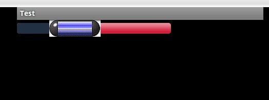

自定义SeekBar的背景颜色，进度条颜色，以及滑块的图片
在Android中的控件种类已经足够我们使用，但是有时候大家需要根据美工的设计来改变一些控件的颜色，式样，以及背景图片
最近正好有这方面的需要，用了很久时间，找到了改变基本颜色以及图片的方法
下面以SeekBar为例，为大家描述一下我的做法
首先在layout文件夹中的main.xml内容如下
<?xml version="1.0" encoding="utf-8"?><LinearLayout xmlns:android="http://schemas.android.com/apk/res/android
android:layout_width="fill_parent
android:layout_height="fill_parent
android:orientation="vertical" >
<SeekBar
android:id="@+id/seek
android:layout_width="300px
android:layout_height="wrap_content
android:max="100
android:progress="50
android:progressDrawable="@drawable/seekbar_img
android:thumb="@drawable/thumb" />
</LinearLayout>
很简单，只有一个SeekBar控件，注意它的 android:progressDrawable="@drawable/seekbar_img" 以及 android:thumb="@drawable/thumb"
个它们分别对应的是进度条的图片以及拖动滑块的图片，这里的图片也可以是我们自定义的drawable中的xml文件，可以理解成这两个属性应该如何显示的意思
而@drawable/seekbar_img和@drawable/thumb它们分别对应着drawable文件夹中的文件seekbar_img.xml和thumb.xml，它们表示着如何去显示进度条与滑块
当初我想的是在网上找SeekBar的原始样式文件是如何定义，这样就可以照搬代码，修改一些我需要的图片以及颜色和大小就行了，于是就开始搜索
我们可以在这是里面找到seek_thumb.xml，内容如下
<?xml version="1.0" encoding="utf-8"?><!--
Copyright (C) 2008 The Android Open Source Project
Licensed under the Apache License, Version 2.0 (the "License");
you may not use this file except in compliance with the License.
You may obtain a copy of the License at
http://www.apache.org/licenses/LICENSE-2.0
Unless required by applicable law or agreed to in writing, software
distributed under the License is distributed on an "AS IS" BASIS,
WITHOUT WARRANTIES OR CONDITIONS OF ANY KIND, either express or implied.
See the License for the specific language governing permissions and
limitations under the License.
-->
<!-- This is the thumb on the seek bar. -->
<selector xmlns:android="http://schemas.android.com/apk/res/android">
<item android:drawable="@drawable/seek_thumb_pressed" android:state_pressed="true" android:state_window_focused="true"/>
<item android:drawable="@drawable/seek_thumb_selected" android:state_focused="true" android:state_window_focused="true"/>
<item android:drawable="@drawable/seek_thumb_selected" android:state_selected="true" android:state_window_focused="true"/>
<item android:drawable="@drawable/seek_thumb_normal"/>
</selector>
它定义的是seekbar的滑块样式，内容很简单，大家应该看得懂，分别对应着按下，选中，以及获得焦点时滑块的图片
另外，我们还可以找到 progress_horizontal.xml,内容如下
<?xml version="1.0" encoding="utf-8"?><!--
Copyright (C) 2008 The Android Open Source Project
Licensed under the Apache License, Version 2.0 (the "License");
you may not use this file except in compliance with the License.
You may obtain a copy of the License at
http://www.apache.org/licenses/LICENSE-2.0
Unless required by applicable law or agreed to in writing, software
distributed under the License is distributed on an "AS IS" BASIS,
WITHOUT WARRANTIES OR CONDITIONS OF ANY KIND, either express or implied.
See the License for the specific language governing permissions and
limitations under the License.
-->
<layer-list xmlns:android="http://schemas.android.com/apk/res/android" >
<item android:id="@android:id/background">
<shape>
<corners android:radius="5dip" />
<gradient
android:angle="270
android:centerColor="ff5a5d5a
android:centerY="0.75
android:endColor="ff747674
android:startColor="ff9d9e9d" />
</shape>
</item>
<item android:id="@android:id/secondaryProgress">
<clip>
<shape>
<corners android:radius="5dip" />
<gradient
android:angle="270
android:centerColor="80ffb600
android:centerY="0.75
android:endColor="a0ffcb00
android:startColor="80ffd300" />
</shape>
</clip>
</item>
<item android:id="@android:id/progress">
<clip>
<shape>
<corners android:radius="5dip" />
<gradient
android:angle="270
android:centerColor="ffffb600
android:centerY="0.75
android:endColor="ffffcb00
android:startColor="ffffd300" />
</shape>
</clip>
</item>
</layer-list>
有了这两个文件的源代码，我们就可以依样画葫芦了
首先在自己的工程下drawable文件夹中建立seek_bar.xml文件与thumb.xml文件
我写的两个文件内容如下
seek_bar.xml
<?xml version="1.0" encoding="utf-8"?><layer-list xmlns:android="http://schemas.android.com/apk/res/android">
<!-- 背景图 -->
<item android:id="@+android:id/background" android:drawable="@drawable/bg" />
<!--全部能量图 -->
<item android:id="@+android:id/SecondaryProgress
android:drawable="@drawable/bg" />
<!-- 进和能量图 -->
<item android:id="@+android:id/progress" android:drawable="@drawable/bg2" />
</layer-list>
thumb.xml
<?xml version="1.0" encoding="UTF-8"?><selector xmlns:android="http://schemas.android.com/apk/res/android">
<!-- 按下状态 -->
<item android:state_pressed="true" android:drawable="@drawable/bg3" />
<!-- 普通无焦点状态 -->
<item android:state_focused="false" android:state_pressed="false
android:drawable="@drawable/bg4" />
</selector>
这时运行程序，我的截图如下，丑了点，但是目的达到了

这是根据自己要求修改样式比较简单的做法。